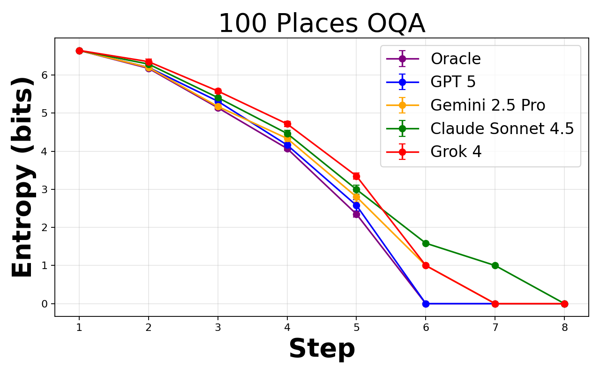
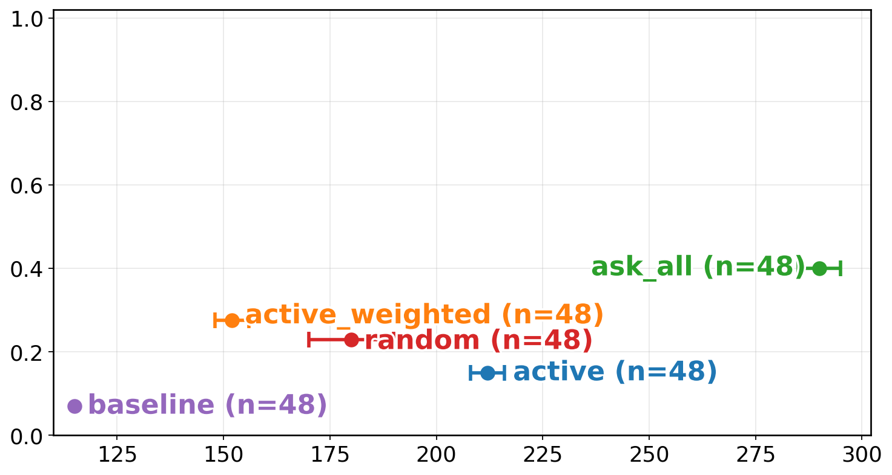

Active Inference as Context Acquisition: When Should an Agent Ask, Retrieve, or Just Act?
Paper: "Active Inference as Context Acquisition for AI Agents", arXiv 2608.19202, by Sanchayan Dutta, Sai Niranjan Ramachandran, Suvrit Sra (affiliations not listed on the abstract page — verify in the PDF). Grounded in the arXiv abstract and HTML full text.
TL;DR
- Agents constantly face a hidden decision: the user left out a constraint, so do you proceed on a default assumption, or spend tokens on a clarifying question, a retrieval call, a tool call, or a prompt trial? Today that choice is vibes and system-prompt folklore ("ask clarifying questions when uncertain"). This paper gives it an objective function: context acquisition as active inference over a latent task state, where an inner step updates beliefs and an outer step picks the next context action, task action, or stop action to minimize expected free energy under token cost.
- In deterministic settings the epistemic term collapses to expected information gain, optionally normalized by token cost — a directly implementable scoring rule: acquire context iff \(I(x;o\,|\,a) > \lambda\,c(a)\). There is also a clean stopping theorem: stop asking when no context action reduces expected Bayes risk by more than its cost.
- The paper instantiates this as Optimal Question Asking (OQA) — 20-questions-style tasks with exact posteriors and a dynamic-programming oracle, 25–300 candidates, binary and multiway — and benchmarks frontier models (GPT-5, GPT-4.1, Gemini 2.5 Pro, Gemini 2.0 Flash, Claude Sonnet 4.5, others). The headline: frontier models do reduce uncertainty every turn, but systematically ask more questions than the oracle — so you can now measure your agent's gap to the information-theoretic optimum.
Why this matters
Context engineering has been the most engineering-driven, least theory-driven layer of the agent stack. We have folk heuristics (front-load constraints, ask-before-write for destructive ops), we have empirical studies of what goes wrong — wasted tokens from underspecified prompts, agents plowing ahead on wrong assumptions — but no principled account of when acquiring one more piece of context is worth it. That's an objective-function-shaped hole, and this paper fills it with the tidiest candidate available: expected free energy from the active-inference literature, which decomposes exactly into the two things a practitioner cares about — "will this observation move my beliefs?" (epistemic value) and "will it steer me toward outcomes I want?" (pragmatic value) — with token cost as the Lagrangian knob between them.
The reason I'd flag this for the harness-design thread of this tracker: the framework is model-agnostic and sits entirely in the harness. The LLM supplies the belief machinery implicitly; the acquisition policy — ask/retrieve/act/stop — is a scoring rule you can implement today as a wrapper: estimate information gain of each candidate context action, divide by its token cost, compare to a threshold. That's the same shape as the tool-selection and stopping problems, and the paper's stopping criterion is the first formal answer I've seen to "when should the agent stop gathering and start doing" — the failure mode that shows up everywhere from over-eager clarification to research agents that never stop reading.
And because OQA has exact posteriors and a DP oracle, it's a rare eval where "optimal" is computable, not vibes. Gap-to-oracle is a much better training signal than pass rate.

From Figure 2 of the paper (Places panel, N=100 binary OQA): every model's entropy curve decays — they are all doing real inference — but the DP oracle's curve drops faster, i.e. models buy less information per question.The core idea
Model the unknown — the user's intent, the missing constraint, the target entity — as a latent task state \(x \in \mathcal{X}\) with belief \(q_t(x)\) at turn \(t\). Actions \(a\) produce observations \(o\) (answers, retrieved snippets, tool outputs) through a likelihood \(p_\theta(o\,|\,x,a)\). The inner loop is plain Bayes:
The outer loop scores each candidate action by expected free energy:
where \(p^*(o)\) encodes preferred observations. The agent picks the action minimizing \(G_t\) — which can be a context action (ask, retrieve, call a tool), a task action (just answer), or stop.
Two corollaries make this practical. In deterministic settings, the epistemic term reduces to mutual information, giving the threshold rule (Proposition 3.3):
— acquire context only if information gain beats \(\lambda\) times its token cost \(c(a)\). And the stopping criterion (Theorem 3.4) compares Bayes risk before and after:
— keep acquiring while some action's expected risk reduction exceeds its cost; otherwise act.
How it works
OQA makes everything exactly computable: the candidate set is finite, answers deterministically filter it, so posteriors are uniform over the surviving set \(C_t\) and entropy is \(\log |C_t|\). The oracle solves the question tree by dynamic programming (reconstructed notation — verify against Eqs. 16–21):
where question \(q\) partitions the surviving candidates \(C\) into answer-groups \(\{C_r\}\); recursion bottoms out when \(|C| \le 1\) or no attribute splits further.
# Active-inference context-acquisition loop (condensed from §3)
q ← prior over latent task state x # e.g. uniform over candidates
loop:
for each candidate action a in {context actions, task actions, stop}:
predict observation distribution q(o|a)
score(a) = expected_risk(a) - epistemic_value(a) # EFE
# deterministic case: epistemic_value = I(x; o | a)
# cost-aware: require I(x; o | a) > λ · c(a)
a* ← argmin score
if a* is stop or a task action:
act / answer using argmax q(x); break
else:
o ← execute a* # ask question / retrieve / call tool
q ← bayes_update(q, a*, o) # exact in OQA; amortized by LLM in general
# oracle baseline: DP over answer-partitions minimizing expected #questions
The benchmark sweeps binary OQA (yes/no questions; Places / Cars / Animals domains) and multiway OQA (k=5-ary attributes; synthetic tables) at 25, 100, 200, 300 candidates, running each frontier model under the same question menu and stopping rule as the oracle. Two applied studies extend it: clarification before generation (hidden style preferences — tone, length, format — with up to 3 clarifying questions at synthetic costs of 24/48/72 tokens), and automated prompt optimization framed as Beta-Bernoulli bandits over a 6-prompt library on ARC-Challenge under a 120k-token budget, scored by entropy reduction per 1k tokens.
Results
- Models reduce entropy but overspend questions. Across binary and multiway OQA, all tested frontier models cut posterior entropy each turn yet consistently need more questions than the DP oracle under identical rules — a planning gap, not a comprehension gap. The gap persists at every candidate-set size tested (25–300).
- Cost-aware asking beats both extremes. In the clarification study, the active_weighted policy (entropy-per-cost scoring, \(H(q_t(v))/c\)) reaches 0.375 style-compliance at ~219 tokens versus a no-clarification baseline at 0.0417 compliance for ~112 tokens — an order-of-magnitude compliance gain for roughly 2× tokens.
- In prompt optimization, information-based acquisition (MI / EFE scoring) is most informative early, while greedy/Thompson strategies commit too soon — the "avoid committing too soon" finding, visible as slower entropy collapse over which prompt is best but better final identification.

From Figure 4 of the paper: the compliance-vs-tokens frontier. The interesting region is the knee — a couple of well-chosen clarifying questions buy most of the compliance.How it connects
- agentic-context-management — that line of work is about what to keep once context exists; this paper is about what to acquire and when to stop. Together they bracket the context lifecycle; both ultimately want the same currency (task-relevant information per token).
- prompt-induced-waste — documented the cost side empirically: underspecified prompts make coding agents do wildly different amounts of work. OQA supplies the normative answer for the same setting — the agent should have bought cheap bits of specification before spending expensive rollout tokens.
- docmemo-probabilistic-memory-retrieval — closest methodological neighbor in the tracker: explicit probabilistic beliefs steering retrieval. DocMemo applies it to memory lookup; here the same posterior machinery decides across all context channels (user, retrieval, tools).
- ThinkingBox (tracked item, added today) — Microsoft's stateful-workflow benchmark shows agents confidently finishing with wrong backend state; a large share of those failures are acting-on-assumed-context. An EFE-style acquisition gate is the natural harness-level countermeasure, and OQA's gap-to-oracle would be a good diagnostic for which models need it most.
- Optimal stopping across the tracker — the strategy-lock-in finding in the autonomous post-training study (agents never revisit their opening choice) is a failure of exactly the exploration/exploitation account this framework formalizes: the epistemic term of EFE is what should keep "reconsider the strategy" alive as an action.
Critical take
The framing is genuinely useful; the evidence is early-stage. Three concerns. First, everything sharp about the theory — exact posteriors, mutual information reducing to entropy of a shrinking candidate set — lives in OQA's deterministic, enumerable world. Real context acquisition has open-ended \(\mathcal{X}\), noisy likelihoods, and beliefs that exist only implicitly in model activations; the paper's own machinery becomes "estimate \(I(x;o|a)\) with the same LLM whose beliefs you don't trust," and the error of that amortized estimate is exactly where the method could quietly fail. Nothing in the experiments measures how well LLM-estimated information gain tracks true information gain outside toy tables. Second, active inference brings baggage: the risk term needs a preference distribution \(p^*(o)\) that someone must specify — in practice this will be another prompt, and the theory doesn't tell you how to set \(\lambda\), which absorbs all the hard product tradeoffs (annoying-the-user cost is not a token cost). Third, the benchmark result "models ask more questions than the oracle" is less damning than it sounds — the DP oracle exploits exhaustive knowledge of the candidate table, and a model matching it on 300-candidate tasks would be suspicious. The right reading is a calibrated yardstick, not "LLMs are bad at asking questions." What I'd actually build from this tomorrow: the threshold rule as a cheap harness gate — score each candidate clarification/retrieval by (estimated entropy reduction)/(token cost) and act when the max falls below threshold. That's implementable in an afternoon and testable against the paper's frontier.
If you remember three things
- Context acquisition deserves an objective function: pick the context/task/stop action minimizing expected free energy — risk minus information gain — under token cost, instead of leaving ask-vs-assume to system-prompt folklore.
- Two implementable rules fall out: acquire iff \(I(x;o|a) > \lambda c(a)\), and stop when no action's expected Bayes-risk reduction beats its cost.
- OQA gives an exactly-solvable yardstick (DP oracle, 25–300 candidates): frontier models reduce uncertainty every turn but consistently overpay in questions — the gap is planning, and it's now measurable.